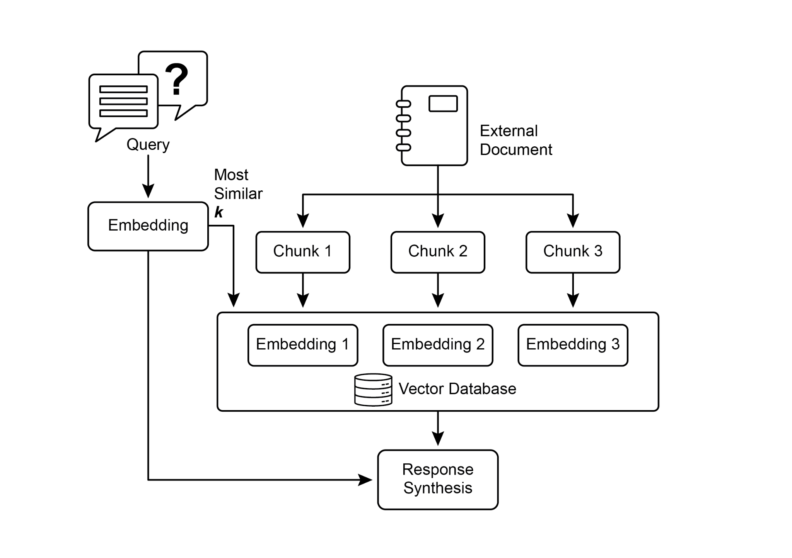
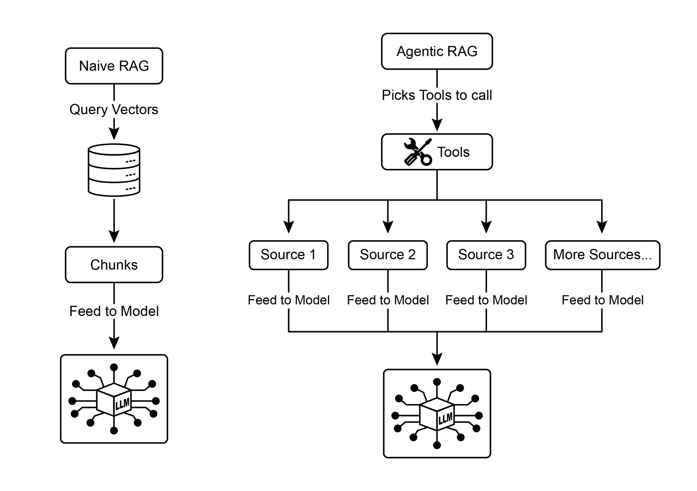
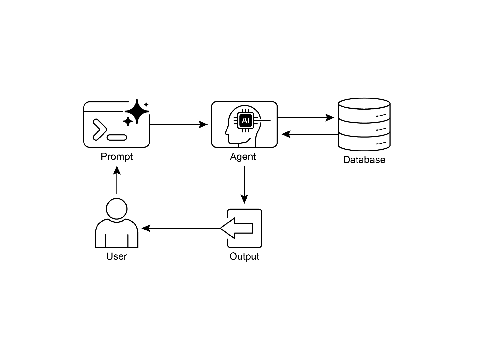
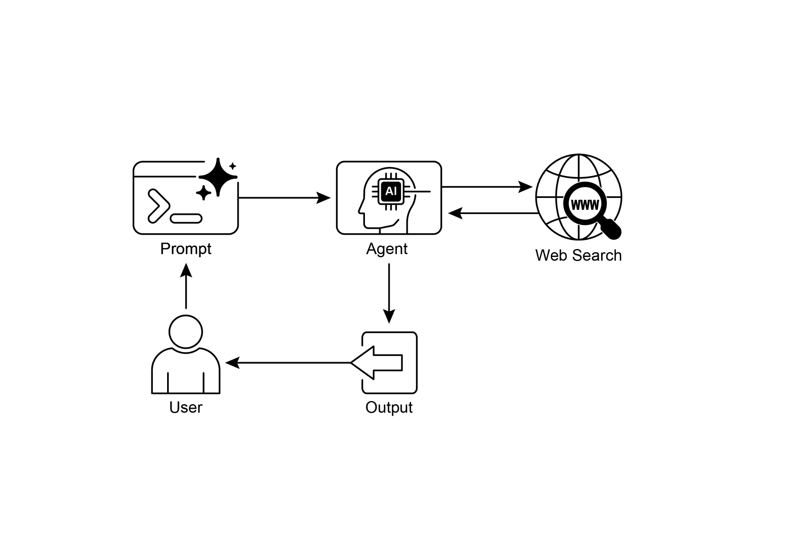

读书 · Agentic Design Patterns · 中英对照
第 14 章 · 知识检索 Knowledge Retrieval (RAG)
Chapter 14: Knowledge Retrieval (RAG) · 《Agentic Design Patterns》 · Antonio Gulli · 2025
讲RAG如何让LLM接入外部实时与私有数据，并介绍GraphRAG与Agentic RAG。
← 返回导读 原书 PDF · 第211页起 上一章:第13章 下一章:第15章
本章要点
① RAG先语义检索相关片段，再拼入提示词，让回答有据可查 ① 嵌入、语义相似度、分块与向量数据库是RAG的四大基础 ① GraphRAG用知识图谱补足跨文档关联推理 ① Agentic RAG加推理层，可校验来源、消解冲突、多步检索
本章一图流
语义检索嵌入+向量库找相关片段→拼入提示词片段注入提示词供LLM参考→有据可查回答基于检索内容可溯源→GraphRAG知识图谱补跨文档推理→Agentic RAG推理层校验来源多步检索
RAG让LLM接入外部数据，GraphRAG与Agentic RAG增强关联与推理。
原书插图




本章划线句
划线句(逐字校验)
"This process effectively transforms the LLM from a closed-book reasoner into an open-book one, significantly enhancing its utility and trustworthiness."
为什么值得划线:一句话点明RAG的本质：从闭卷到开卷
划线句(逐字校验)
"In essence, while other techniques search for words, vector databases search for meaning."
为什么值得划线:精炼区分关键词检索与语义检索
划线句(逐字校验)
"Instead of just retrieving and augmenting, an "agent"—a specialized AI component—acts as a critical gatekeeper and refiner of knowledge."
为什么值得划线:概括Agentic RAG的核心增量
正文(英中对照)
第14章：知识检索（Knowledge Retrieval，RAG） Chapter 14: Knowledge Retrieval (RAG)
"LLMs exhibit substantial capabilities in generating human-like text. However, their knowledge base is typically confined to the data on which they were trained, limiting their access to real-time information, specific company data, or highly specialized details. Knowledge Retrieval (RAG, or Retrieval Augmented Generation), addresses this limitation. RAG enables LLMs to access and integrate external, current, and context-specific information, thereby enhancing the accuracy, relevance, and factual basis of their outputs. For AI agents, this is crucial as it allows them to ground their actions and responses in real-time, verifiable data beyond their static training."
LLM 在生成类人文本方面展现出强大能力。然而，其知识库通常局限于训练时所使用的数据，这限制了它们获取实时信息、特定公司数据或高度专业化细节的能力。知识检索（RAG，即检索增强生成，Retrieval Augmented Generation）解决了这一局限。RAG 使 LLM 能够访问并整合外部的、当前的、特定上下文的信息，从而提升其输出的准确性、相关性和事实基础。对于 AI agent 而言，这一点至关重要，因为它使 agent 能够将其行动和响应建立在实时、可验证的数据之上，而非仅依赖其静态训练数据。
导读注:点出 LLM 静态知识的局限，以及 RAG 如何为 AI agent 提供实时、可验证的数据支撑。
"This capability enables them to perform complex tasks accurately, such as accessing the latest company policies to answer a specific question or checking current inventory before placing an order. By integrating external knowledge, RAG transforms agents from simple conversationalists into effective, data-driven tools capable of executing meaningful work. Knowledge Retrieval (RAG) Pattern Overview The Knowledge Retrieval (RAG) pattern significantly enhances the capabilities of LLMs by granting them access to external knowledge bases before generating a response. Instead of relying solely on their internal, pre-trained knowledge, RAG allows LLMs to "look up" information, much like a human might consult a book or search the internet."
这一能力使他们能够准确执行复杂任务，例如访问最新的公司政策来回答特定问题，或在下单前检查当前库存。通过整合外部知识，RAG 将智能体从简单的对话者转变为有效的、数据驱动的工具，能够执行有意义的工作。知识检索（Knowledge Retrieval，RAG）模式概述：知识检索（RAG）模式通过在生成响应之前授予 LLM 访问外部知识库的权限，显著增强了 LLM 的能力。RAG 不再仅仅依赖其内部的预训练知识，而是允许 LLM "查阅"信息，就像人类可能会查阅书籍或搜索互联网一样。
导读注:点出 RAG 让 LLM 从"凭记忆答"变为"先查再答"，是智能体落地的关键。
"This process empowers LLMs to provide more accurate, up-to-date, and verifiable answers. When a user poses a question or gives a prompt to an AI system using RAG, the query isn't sent directly to the LLM. Instead, the system first scours a vast external knowledge base—a highly organized library of documents, databases, or web pages—for relevant information. This search is not a simple keyword match; it's a "semantic search" that understands the user's intent and the meaning behind their words. This initial search pulls out the most pertinent snippets or "chunks" of information. These extracted pieces are then "augmented," or added, to the original prompt, creating a richer, more informed query."
这一过程使 LLM 能够提供更准确、最新且可验证的答案。当用户向使用 RAG 的 AI 系统提出问题或给出 prompt 时，查询不会直接发送给 LLM。相反，系统会先在庞大的外部知识库——一个高度组织化的文档、数据库或网页库——中搜寻相关信息。这种搜索不是简单的关键词匹配，而是语义搜索（semantic search），能够理解用户意图和词语背后的含义。这一初步搜索会提取出最相关的片段或“块”（chunks）。这些提取出的片段随后被“增强”（augmented），即添加到原始 prompt 中，形成一个信息更丰富、更有依据的查询。
导读注:揭示 RAG 的核心机制：语义搜索而非关键词匹配，再将检索片段增强到 prompt。
"Finally, this enhanced prompt is sent to the LLM. With this additional context, the LLM can generate a response that is not only fluent and natural but also factually grounded in the retrieved data. The RAG framework provides several significant benefits. It allows LLMs to access up-to-date information, thereby overcoming the constraints of their static training 1 data. This approach also reduces the risk of "hallucination"—the generation of false information—by grounding responses in verifiable data. Moreover, LLMs can utilize specialized knowledge found in internal company documents or wikis."
最后，这个增强后的 prompt 被发送给 LLM。借助这些额外的上下文，LLM 能够生成不仅流畅自然、而且在事实上以检索到的数据为依据的回复。RAG 框架带来了若干显著优势。它使 LLM 能够访问最新信息，从而克服其静态训练数据 1 的局限。这种方法还通过将回复建立在可验证的数据之上，降低了“幻觉”（即生成虚假信息）的风险。此外，LLM 还可以利用公司内部文档或 wiki 中的专业知识。
导读注:点出 RAG 的三大价值：获取最新信息、降低幻觉、利用内部知识。
"A vital advantage of this process is the capability to offer "citations," which pinpoint the exact source of information, thereby enhancing the trustworthiness and verifiability of the AI's responses.. To fully appreciate how RAG functions, it's essential to understand a few core concepts (see Fig.1): Embeddings: In the context of LLMs, embeddings are numerical representations of text, such as words, phrases, or entire documents. These representations are in the form of a vector, which is a list of numbers. The key idea is to capture the semantic meaning and the relationships between different pieces of text in a mathematical space."
这一过程的一个关键优势是能够提供“引用”，精确指出信息的准确来源，从而增强 AI 回答的可信度和可验证性。要充分理解 RAG 的工作原理，必须了解几个核心概念（见图1）：嵌入（Embeddings）：在 LLM 语境中，嵌入是文本（如单词、短语或整篇文档）的数值表示。这些表示以向量（即一组数字的列表）的形式存在。其核心思想是在数学空间中捕捉不同文本片段的语义含义及其相互关系。
导读注:强调 RAG 的引用溯源优势，并引出嵌入这一核心概念。
"This can be at a surface level, looking at the overlap of words (lexical similarity), or at a deeper, meaning-based level. In the context of RAG, text similarity is crucial for finding the most relevant information in the knowledge base that corresponds to a user's query. For instance, consider the sentences: "What is the capital of France?" and "Which city is the capital of France?". While the wording is different, they are asking the same question. A good text similarity model would recognize this and assign a high similarity score to these two sentences, even though they only share a few words. This is often calculated using the embeddings of the texts."
这可以是表面层面的，考察词语的重叠（词汇相似度，lexical similarity），也可以是更深层的、基于意义的层面。在 RAG 的语境中，文本相似度对于在知识库中找到与用户查询相对应的最相关信息至关重要。例如，考虑这两个句子："What is the capital of France?" 和 "Which city is the capital of France?"。尽管措辞不同，它们问的是同一个问题。一个好的文本相似度模型会识别出这一点，并给这两个句子赋予较高的相似度分数，即使它们只共享少数几个词。这通常使用文本的嵌入（embeddings）来计算。
导读注:语义相似度能识别措辞不同但含义相同的句子，是 RAG 检索的关键。
"Semantic Similarity and Distance: Semantic similarity is a more advanced form of text similarity that focuses purely on the meaning and context of the text, rather than just the words used. It aims to understand if two pieces of text convey the same concept or idea. Semantic distance is the inverse of this; a high semantic similarity implies a low semantic distance, and vice versa. In RAG, semantic search relies on finding documents with the smallest semantic distance to the user's query. For instance, the phrases "a furry feline companion" and "a domestic cat" have no words in common besides "a"."
语义相似度与距离（Semantic Similarity and Distance）：语义相似度是一种更高级的文本相似度形式，它纯粹关注文本的含义和上下文，而不仅仅是所使用的词语。它旨在理解两段文本是否传达相同的概念或想法。语义距离则与之相反；高语义相似度意味着低语义距离，反之亦然。在 RAG 中，语义搜索依赖于找到与用户查询语义距离最小的文档。例如，短语 "a furry feline companion" 和 "a domestic cat" 除了 "a" 之外没有任何共同的词。
导读注:点明语义相似度只看含义而非字面，并给出无共同词却同义的经典例子。
"However, a model that understands semantic similarity would 2 recognize that they refer to the same thing and would consider them to be highly similar. This is because their embeddings would be very close in the vector space, indicating a small semantic distance. This is the "smart search" that allows RAG to find relevant information even when the user's wording doesn't exactly match the text in the knowledge base. Fig.1: RAG Core Concepts: Chunking, Embeddings, and Vector Database Chunking of Documents: Chunking is the process of breaking down large documents into smaller, more manageable pieces, or "chunks." For a RAG system to work efficiently, it cannot feed entire large documents into the LLM."
然而，一个理解语义相似性的模型会认识到它们指的是同一事物，并认为它们高度相似。这是因为它们的嵌入（embeddings）在向量空间中会非常接近，表明语义距离很小。这就是“智能搜索”，它使 RAG 即使用户的措辞与知识库中的文本不完全匹配，也能找到相关信息。图1：RAG 核心概念：分块（Chunking）、嵌入（Embeddings）与向量数据库（Vector Database） 文档分块：分块是将大型文档分解为更小、更易管理的片段（即“块”）的过程。为了让 RAG 系统高效运行，它不能将整个大型文档直接输入 LLM。
导读注:点出嵌入向量距离如何支撑 RAG 的语义“智能搜索”，并引出分块概念。
"Instead, it processes these smaller chunks. The way documents are chunked is important for preserving the context and meaning of the information. For instance, instead of treating a 50-page user manual as a single block of text, a chunking strategy might break it down into sections, paragraphs, or even sentences. For instance, a section on "Troubleshooting" would be a separate chunk from the "Installation Guide." When a user asks a question about a specific problem, the RAG system can then retrieve the most relevant troubleshooting chunk, rather than the entire manual. This makes the 3 retrieval process faster and the information provided to the LLM more focused and relevant to the user's immediate need."
相反，它处理这些较小的块。文档的分块方式对于保留信息的上下文和含义很重要。例如，分块策略不会将一本50页的用户手册视为单个文本块，而是可能将其分解为章节、段落甚至句子。例如，关于“故障排除”的章节将与“安装指南”分开作为一个独立的块。当用户询问特定问题时，RAG 系统可以检索最相关的故障排除块，而不是整本手册。这使得检索过程更快，并且提供给 LLM 的信息更加聚焦，更贴合用户的即时需求。
导读注:分块策略决定 RAG 检索质量，按语义切分比整篇投喂更精准高效。
"Once documents are chunked, the RAG system must employ a retrieval technique to find the most relevant pieces for a given query. The primary method is vector search, which uses embeddings and semantic distance to find chunks that are conceptually similar to the user's question. An older, but still valuable, technique is BM25, a keyword-based algorithm that ranks chunks based on term frequency without understanding semantic meaning. To get the best of both worlds, hybrid search approaches are often used, combining the keyword precision of BM25 with the contextual understanding of semantic search. This fusion allows for more robust and accurate retrieval, capturing both literal matches and conceptual relevance."
文档完成分块后，RAG 系统必须采用检索技术来为给定查询找到最相关的片段。主要方法是向量搜索（vector search），它利用 embedding 和语义距离来找到与用户问题在概念上相似的块。一种较旧但仍具价值的技术是 BM25，这是一种基于关键词的算法，它根据词频对块进行排序，而不理解语义含义。为了兼取两者之长，通常会使用混合搜索（hybrid search）方法，将 BM25 的关键词精确性与语义搜索的上下文理解相结合。这种融合能够实现更稳健、更准确的检索，同时捕捉字面匹配和概念相关性。
导读注:点出混合搜索如何兼取关键词精确性与语义理解之长。
"Vector databases: A vector database is a specialized type of database designed to store and query embeddings efficiently. After documents are chunked and converted into embeddings, these high-dimensional vectors are stored in a vector database. Traditional retrieval techniques, like keyword-based search, are excellent at finding documents containing exact words from a query but lack a deep understanding of language. They wouldn't recognize that "furry feline companion" means "cat." This is where vector databases excel. They are built specifically for semantic search. By storing text as numerical vectors, they can find results based on conceptual meaning, not just keyword overlap."
向量数据库（vector database）：向量数据库是一种专门设计用于高效存储和查询 embedding 的数据库类型。文档经过分块并转换为 embedding 后，这些高维向量会被存储在向量数据库中。传统检索技术（如基于关键词的搜索）擅长查找包含查询中确切词语的文档，但缺乏对语言的深层理解。它们无法识别“毛茸茸的猫科动物伙伴”指的就是“猫”。这正是向量数据库的优势所在。它们专为语义搜索而构建。通过将文本存储为数值向量，它们能够基于概念含义而非仅关键词重叠来查找结果。
导读注:点出向量数据库的核心价值：语义搜索超越关键词匹配。
"When a user's query is also converted into a vector, the database uses highly optimized algorithms (like HNSW - Hierarchical Navigable Small World) to rapidly search through millions of vectors and find the ones that are "closest" in meaning. This approach is far superior for RAG because it uncovers relevant context even if the user's phrasing is completely different from the source documents. In essence, while other techniques search for words, vector databases search for meaning. This technology is implemented in various forms, from managed databases like Pinecone and Weaviate to open-source solutions such as Chroma DB, Milvus, and Qdrant."
当用户的查询也被转换为向量时，数据库会使用高度优化的算法（如 HNSW - 分层可导航小世界）快速搜索数百万个向量，并找到在语义上"最接近"的向量。这种方法对 RAG 来说远为优越，因为即使用户的措辞与源文档完全不同，它也能揭示相关的上下文。本质上，其他技术搜索的是词语，而向量数据库搜索的是语义。这项技术以多种形式实现，从 Pinecone 和 Weaviate 等托管数据库，到 Chroma DB、Milvus 和 Qdrant 等开源解决方案。
导读注:点明向量数据库的核心优势：按语义而非字词检索，并列举主流实现。
"Even existing databases can be augmented with vector search capabilities, as seen with Redis, Elasticsearch, and Postgres (using the pgvector extension). The core retrieval mechanisms are often powered by libraries like Meta AI's FAISS or Google Research's ScaNN, which are fundamental to the efficiency of these systems. RAG's Challenges: Despite its power, the RAG pattern is not without its challenges. A primary issue arises when the information needed to answer a query is not confined to a single chunk but is spread across multiple parts of a document or even several documents. In such cases, the retriever might fail to gather all the necessary context, leading to an incomplete or inaccurate answer."
即便是现有的数据库，也可以通过向量搜索能力进行增强，正如 Redis、Elasticsearch 和 Postgres（使用 pgvector 扩展）所展示的那样。核心检索机制通常由 Meta AI 的 FAISS 或 Google Research 的 ScaNN 等库提供支持，这些库是这些系统效率的基础。RAG 的挑战：尽管 RAG 模式功能强大，但并非没有挑战。一个主要问题出现在回答查询所需的信息并不局限于单个 chunk（数据块），而是分散在文档的多个部分甚至多个文档中时。在这种情况下，检索器可能无法收集所有必要的上下文，导致答案不完整或不准确。
导读注:指出 RAG 的跨块信息分散难题：检索器易漏掉上下文，导致答案不完整。
"The system's effectiveness is also 4 highly dependent on the quality of the chunking and retrieval process; if irrelevant chunks are retrieved, it can introduce noise and confuse the LLM. Furthermore, effectively synthesizing information from potentially contradictory sources remains a significant hurdle for these systems. Besides that, another challenge is that RAG requires the entire knowledge base to be pre-processed and stored in specialized databases, such as vector or graph databases, which is a considerable undertaking. Consequently, this knowledge requires periodic reconciliation to remain up-to-date, a crucial task when dealing with evolving sources like company wikis."
该系统的有效性也高度依赖于分块（chunking）和检索过程的质量；如果检索到不相关的块，就会引入噪声并混淆 LLM。此外，从可能相互矛盾的来源中有效综合信息仍然是这些系统面临的重大障碍。除此之外，另一个挑战是 RAG 要求整个知识库预先处理并存储在专用数据库中，例如向量数据库或图数据库，这是一项相当大的工程。因此，这些知识需要定期协调以保持最新，在处理公司 wiki 等不断演变的来源时，这是一项关键任务。
导读注:指出 RAG 的检索质量与知识库维护成本是两大隐性瓶颈。
"This entire process can have a noticeable impact on performance, increasing latency, operational costs, and the number of tokens used in the final prompt. In summary, the Retrieval-Augmented Generation (RAG) pattern represents a significant leap forward in making AI more knowledgeable and reliable. By seamlessly integrating an external knowledge retrieval step into the generation process, RAG addresses some of the core limitations of standalone LLMs. The foundational concepts of embeddings and semantic similarity, combined with retrieval techniques like keyword and hybrid search, allow the system to intelligently find relevant information, which is made manageable through strategic chunking."
整个流程会对性能产生明显影响，增加延迟、运营成本以及最终 prompt 中使用的 token 数量。总之，检索增强生成（Retrieval-Augmented Generation, RAG）模式代表着让 AI 更有知识、更可靠方面的一次重大飞跃。通过将外部知识检索步骤无缝集成到生成过程中，RAG 解决了独立 LLM 的一些核心局限。嵌入与语义相似度的基础概念，结合关键词搜索和混合搜索等检索技术，使系统能够智能地找到相关信息，而策略性分块（chunking）则让这一过程变得可控。
导读注:点出 RAG 的价值与代价：性能开销不可忽视，但能弥补独立 LLM 的核心局限。
"This entire retrieval process is powered by specialized vector databases designed to store and efficiently query millions of embeddings at scale. While challenges in retrieving fragmented or contradictory information persist, RAG empowers LLMs to produce answers that are not only contextually appropriate but also anchored in verifiable facts, fostering greater trust and utility in AI. Graph RAG: GraphRAG is an advanced form of Retrieval-Augmented Generation that utilizes a knowledge graph instead of a simple vector database for information retrieval. It answers complex queries by navigating the explicit relationships (edges) between data entities (nodes) within this structured knowledge base."
整个检索过程由专门的向量数据库(vector database)驱动，这些数据库旨在规模化地存储并高效查询数百万个嵌入(embedding)。尽管在检索碎片化或矛盾信息方面仍存在挑战，但 RAG 使 LLM 能够生成不仅符合上下文、而且锚定于可验证事实的答案，从而增强人们对 AI 的信任与实用价值。Graph RAG：GraphRAG 是检索增强生成(Retrieval-Augmented Generation)的一种高级形式，它使用知识图谱(knowledge graph)而非简单的向量数据库进行信息检索。它通过在此结构化知识库中导航数据实体(节点)之间的显式关系(边)来回答复杂查询。
导读注:点出 RAG 让 LLM 答案锚定可验证事实，并引出 GraphRAG 用知识图谱替代向量库。
"A key advantage is its ability to synthesize answers from information fragmented across multiple documents, a common failing of traditional RAG. By understanding these connections, GraphRAG provides more contextually accurate and nuanced responses. Use cases include complex financial analysis, connecting companies to market events, and scientific research for discovering relationships between genes and diseases. The primary drawback, however, is the significant complexity, cost, and expertise required to build and maintain a high-quality knowledge graph. This setup is also less flexible and can introduce higher latency compared to simpler vector search systems."
一个关键优势是它能够从分散在多个文档中的信息综合出答案，这是传统 RAG 常见的失败之处。通过理解这些关联，GraphRAG 提供更具上下文准确性和细微差别的响应。用例包括复杂的金融分析、将公司与市场事件关联起来，以及用于发现基因与疾病之间关系的科学研究。然而，主要缺点是构建和维护高质量知识图谱所需的显著复杂性、成本和专业知识。与更简单的向量搜索系统相比，这种设置也不够灵活，并且可能引入更高的延迟。
导读注:对比 GraphRAG 优势与代价：综合跨文档信息更强，但知识图谱构建成本高、延迟大。
"The system's effectiveness is entirely dependent on the quality and completeness of the underlying graph structure. Consequently, GraphRAG offers superior contextual reasoning for intricate questions but at a much higher implementation and 5 maintenance cost. In summary, it excels where deep, interconnected insights are more critical than the speed and simplicity of standard RAG. Agentic RAG: An evolution of this pattern, known as Agentic RAG (see Fig.2), introduces a reasoning and decision-making layer to significantly enhance the reliability of information extraction. Instead of just retrieving and augmenting, an "agent"—a specialized AI component—acts as a critical gatekeeper and refiner of knowledge."
系统的有效性完全取决于底层图结构（graph structure）的质量与完整性。因此，GraphRAG 对复杂问题能提供更优的上下文推理能力，但实现与维护成本要高得多。总之，在深度、相互关联的洞察比标准 RAG 的速度与简洁性更为关键的场景中，它表现更出色。Agentic RAG：作为该模式的一种演进，Agentic RAG（见图2）引入了推理与决策层，以显著提升信息抽取的可靠性。它不再只是检索与增强，而是由一个"智能体（agent）"——一种专门的 AI 组件——充当知识的关键把关者与精炼者。
导读注:点出 GraphRAG 以高成本换取深度推理，并引出 Agentic RAG 的推理决策层。
"Rather than passively accepting the initially retrieved data, this agent actively interrogates its quality, relevance, and completeness, as illustrated by the following scenarios. First, an agent excels at reflection and source validation. If a user asks, "What is our company's policy on remote work?" a standard RAG might pull up a 2020 blog post alongside the official 2025 policy document."
该 agent 并非被动接受最初检索到的数据，而是主动审视其质量、相关性与完整性，如下列场景所示。首先，agent 擅长 Reflection 与来源验证。如果用户问“我们公司关于远程办公的政策是什么？”，标准 RAG 可能会同时检索到一篇 2020 年的博客文章和官方的 2025 年政策文件。
导读注:强调 agent 主动质疑检索结果，而非被动接受，Reflection 与来源验证是关键。
"The agent, however, would analyze the documents' metadata, recognize the 2025 policy as the most current and authoritative source, and discard the outdated blog post before sending the correct context to the LLM for a precise answer. 6 Fig.2: Agentic RAG introduces a reasoning agent that actively evaluates, reconciles, and refines retrieved information to ensure a more accurate and trustworthy final response. Second, an agent is adept at reconciling knowledge conflicts. Imagine a financial analyst asks, "What was Project Alpha's Q1 budget?" The system retrieves two documents: an initial proposal stating a €50,000 budget and a finalized financial report listing it as €65,000."
然而，该 agent（智能体）会分析文档的元数据，识别出 2025 年的政策是最新且最具权威性的来源，并在将正确的上下文发送给 LLM 以获取精确答案之前，丢弃过时的博客文章。6 图 2：Agentic RAG 引入了一个推理 agent，它主动评估、协调并精炼检索到的信息，以确保最终响应更准确、更可信。其次，agent 擅长协调知识冲突。设想一位金融分析师问道：“Project Alpha 第一季度的预算是多少？”系统检索到两份文档：一份初始提案写明预算为 €50,000，一份最终财务报告将其列为 €65,000。
导读注:Agentic RAG 能主动甄别信息时效与权威性，并协调文档间的知识冲突。
"An Agentic RAG would identify this contradiction, prioritize the financial report as the more reliable source, and provide the LLM with the verified figure, ensuring the final answer is based on the most accurate data. Third, an agent can perform multi-step reasoning to synthesize complex answers. If a user asks, "How do our product's features and pricing compare to Competitor X's?" the agent would decompose this into separate sub-queries. It would initiate distinct searches for its own product's features, its pricing, Competitor X's features, and Competitor X's pricing."
一个 Agentic RAG（智能体式检索增强生成）会识别出这一矛盾，将财务报告优先视为更可靠的来源，并向 LLM 提供经过验证的数字，确保最终答案基于最准确的数据。第三，智能体可以执行多步推理以综合出复杂答案。如果用户问：“我们的产品功能和定价与竞争对手 X 相比如何？”智能体会将其分解为独立的子查询。它会分别发起针对自身产品功能、自身定价、竞争对手 X 功能以及竞争对手 X 定价的独立搜索。
导读注:展示 Agentic RAG 如何解决信息矛盾并分解复杂问题。
"After gathering these individual pieces of information, the agent would synthesize them into a structured, comparative context before feeding it to the LLM, enabling a comprehensive response that a simple retrieval could not have produced. Fourth, an agent can identify knowledge gaps and use external tools. Suppose a user asks, "What was the market's immediate reaction to our new product launched yesterday?" The agent searches the internal knowledge base, which is updated weekly, and finds no relevant information. Recognizing this gap, it can then activate a tool—such as a live web-search API—to find recent news articles and social media sentiment."
在收集这些单独的信息片段后，智能体（agent）会将它们综合成一个结构化的、可比较的上下文，然后再输入给 LLM，从而产生简单检索无法实现的全面响应。第四，智能体能够识别知识缺口并使用外部工具。假设用户问：“市场对我们昨天发布的新产品有何即时反应？”智能体搜索每周更新的内部知识库，未找到相关信息。识别到这一缺口后，它可以激活工具——例如实时网络搜索 API——来查找近期新闻文章和社交媒体情绪。
导读注:智能体能识别知识缺口并调用外部工具，突破静态知识库的局限。
"The agent then uses this freshly gathered external information to provide an up-to-the-minute answer, overcoming the limitations of its static internal database. Challenges of Agentic RAG: While powerful, the agentic layer introduces its own set of challenges. The primary drawback is a significant increase in complexity and cost. Designing, implementing, and maintaining the agent's decision-making logic and tool integrations requires substantial engineering effort and adds to computational expenses. This complexity can also lead to increased latency, as the agent's cycles of reflection, tool use, and multi-step reasoning take more time than a standard, direct retrieval process."
随后，智能体（agent）利用这些新收集的外部信息来提供最新的答案，从而克服其静态内部数据库的局限性。Agentic RAG 的挑战：尽管功能强大，但智能体层也带来了一系列自身的挑战。主要缺点是复杂性和成本显著增加。设计、实现和维护智能体的决策逻辑与工具集成需要大量的工程投入，并增加计算开销。这种复杂性还可能导致延迟增加，因为智能体的 Reflection、工具使用和多步推理循环比标准的直接检索过程耗时更长。
导读注:点出 Agentic RAG 的代价：复杂度、成本与延迟齐升。
"Furthermore, the agent itself can become a new source of error; a flawed reasoning process could cause it to get stuck in useless loops, misinterpret a task, or improperly discard relevant information, ultimately degrading the quality of the final response. 7 In summary: Agentic RAG represents a sophisticated evolution of the standard retrieval pattern, transforming it from a passive data pipeline into an active, problem-solving framework. By embedding a reasoning layer that can evaluate sources, reconcile conflicts, decompose complex questions, and use external tools, agents dramatically improve the reliability and depth of the generated answers."
此外，智能体（agent）本身也可能成为新的错误来源；有缺陷的推理过程可能导致它陷入无用的循环、误解任务或不当丢弃相关信息，最终降低最终回复的质量。7 总之：Agentic RAG 代表了标准检索模式的一次复杂演进，将其从被动的数据管道转变为主动的、解决问题的框架。通过嵌入一个能够评估来源、调和冲突、分解复杂问题并使用外部工具的推理层，智能体显著提升了生成答案的可靠性与深度。
导读注:指出智能体自身也会引入错误，并总结 Agentic RAG 的主动推理价值。
"This advancement makes the AI more trustworthy and capable, though it comes with important trade-offs in system complexity, latency, and cost that must be carefully managed. Practical Applications & Use Cases Knowledge Retrieval (RAG) is changing how Large Language Models (LLMs) are utilized across various industries, enhancing their ability to provide more accurate and contextually relevant responses. Applications include: ● Enterprise Search and Q&A: Organizations can develop internal chatbots that respond to employee inquiries using internal documentation such as HR policies, technical manuals, and product specifications."
这一进步使 AI 更值得信赖、能力更强，尽管它在系统复杂性、延迟和成本方面带来了必须谨慎管理的重要权衡。实际应用与用例 知识检索（RAG）正在改变大型语言模型（LLM）在各行业中的使用方式，增强其提供更准确、更贴合上下文的回答的能力。应用包括：● 企业搜索与问答：组织可以开发内部聊天机器人，利用人力资源政策、技术手册和产品规格等内部文档来回应员工询问。
导读注:点出 RAG 提升 LLM 可信度，但需权衡复杂性、延迟与成本。
"The RAG system extracts relevant sections from these documents to inform the LLM's response. ● Customer Support and Helpdesks: RAG-based systems can offer precise and consistent responses to customer queries by accessing information from product manuals, frequently asked questions (FAQs), and support tickets. This can reduce the need for direct human intervention for routine issues. ● Personalized Content Recommendation: Instead of basic keyword matching, RAG can identify and retrieve content (articles, products) that is semantically related to a user's preferences or previous interactions, leading to more relevant recommendations. ● News and Current Events Summarization: LLMs can be integrated with real-time news feeds."
RAG 系统从这些文档中提取相关章节,为 LLM 的回复提供依据。● 客户支持与帮助台:基于 RAG 的系统可通过访问产品手册、常见问题解答(FAQ)和支持工单中的信息,为客户查询提供精确且一致的回复。这可减少常规问题对人工直接干预的需求。● 个性化内容推荐:RAG 不再依赖基础的关键词匹配,而是能够识别并检索与用户偏好或过往交互在语义上相关的内容(文章、产品),从而给出更相关的推荐。● 新闻与时事摘要:LLM 可与实时新闻源集成。
导读注:展示 RAG 在客服、推荐、新闻摘要三大场景的落地价值,语义检索优于关键词匹配。
"When prompted about a current event, the RAG system retrieves recent articles, allowing the LLM to produce an up-to-date summary. By incorporating external knowledge, RAG extends the capabilities of LLMs beyond simple communication to function as knowledge processing systems. 8 Hands-On Code Example (ADK) To illustrate the Knowledge Retrieval (RAG) pattern, let's see three examples. First, is how to use Google Search to do RAG and ground LLMs to search results. Since RAG involves accessing external information, the Google Search tool is a direct example of a built-in retrieval mechanism that can augment an LLM's knowledge."
当被问及当前事件时，RAG 系统会检索近期文章，使 LLM 能够生成最新的摘要。通过整合外部知识，RAG 将 LLM 的能力从简单的交流扩展为知识处理系统。8 动手代码示例（ADK）为说明知识检索（RAG）模式，我们来看三个示例。首先是如何使用 Google Search 进行 RAG，并将 LLM 的生成锚定（ground）到搜索结果上。由于 RAG 涉及访问外部信息，Google Search 工具是内置检索机制的直接示例，可用于增强 LLM 的知识。
导读注:点出 RAG 让 LLM 从聊天工具升级为知识处理系统，并引出 Google Search 示例。
python
from google.adk.tools import google_search
from google.adk.agents import Agent"search_agent = Agent( name="research_assistant", model="gemini-2.0-flash-exp", instruction="You help users research topics. When asked, use the Google Search tool", tools=[google_search] ) Second, this section explains how to utilize Vertex AI RAG capabilities within the Google ADK. The code provided demonstrates the initialization of VertexAiRagMemoryService from the ADK. This allows for establishing a connection to a Google Cloud Vertex AI RAG Corpus. The service is configured by specifying the corpus resource name and optional parameters such as SIMILARITY_TOP_K and VECTOR_DISTANCE_THRESHOLD. These parameters influence the retrieval process. SIMILARITY_TOP_K defines the number of top similar results to be retrieved."
search_agent = Agent( name="research_assistant", model="gemini-2.0-flash-exp", instruction="You help users research topics. When asked, use the Google Search tool", tools=[google_search] ) 其次，本节说明如何在 Google ADK 中利用 Vertex AI RAG 能力。所提供的代码演示了从 ADK 初始化 VertexAiRagMemoryService。这允许建立到 Google Cloud Vertex AI RAG Corpus 的连接。该服务通过指定 corpus 资源名称以及可选参数（如 SIMILARITY_TOP_K 和 VECTOR_DISTANCE_THRESHOLD）进行配置。这些参数会影响检索过程。SIMILARITY_TOP_K 定义要检索的 top 相似结果的数量。
导读注:展示 ADK 中接入 Vertex AI RAG 的初始化方式，SIMILARITY_TOP_K 控制检索条数。
"VECTOR_DISTANCE_THRESHOLD sets a limit on the semantic distance for the retrieved results. This setup enables agents to perform scalable and persistent semantic knowledge retrieval from the designated RAG Corpus."
VECTOR_DISTANCE_THRESHOLD 为检索结果的语义距离设定了限制。这一设置使 agent 能够从指定的 RAG Corpus 中执行可扩展且持久的语义知识检索。
导读注:阈值参数控制检索精度，可扩展且持久是 RAG 检索的关键特性。
"The process effectively integrates Google Cloud's RAG functionalities into an ADK agent, thereby supporting the development of responses grounded in factual data. # Import the necessary VertexAiRagMemoryService class from the google.adk.memory module. from google.adk.memory import VertexAiRagMemoryService RAG_CORPUS_RESOURCE_NAME = "projects/your-gcp-project-id/locations/us-central1/ragCorpora/your-c orpus-id" # Define an optional parameter for the number of top similar results 9 to retrieve. # This controls how many relevant document chunks the RAG service will return."
该流程有效地将 Google Cloud 的 RAG 功能集成到 ADK agent 中，从而支持开发基于事实数据的响应。# 从 google.adk.memory 模块导入必要的 VertexAiRagMemoryService 类。from google.adk.memory import VertexAiRagMemoryService RAG_CORPUS_RESOURCE_NAME = "projects/your-gcp-project-id/locations/us-central1/ragCorpora/your-c orpus-id" # 定义一个可选参数，用于指定要检索的最相似结果的数量。 # 该参数控制 RAG 服务将返回多少个相关文档块。
导读注:展示如何将 Google Cloud RAG 接入 ADK agent，基于事实数据生成响应。
"SIMILARITY_TOP_K = 5 # Define an optional parameter for the vector distance threshold. # This threshold determines the maximum semantic distance allowed for retrieved results; # results with a distance greater than this value might be filtered out."
SIMILARITY_TOP_K = 5 # 定义一个可选的向量距离阈值参数。 # 该阈值决定检索结果允许的最大语义距离； # 距离大于该值的结果可能会被过滤掉。
导读注:SIMILARITY_TOP_K 与距离阈值共同控制检索结果的数量与质量。
"VECTOR_DISTANCE_THRESHOLD = 0.7 # Initialize an instance of VertexAiRagMemoryService. # This sets up the connection to your Vertex AI RAG Corpus. # - rag_corpus: Specifies the unique identifier for your RAG Corpus. # - similarity_top_k: Sets the maximum number of similar results to fetch. # - vector_distance_threshold: Defines the similarity threshold for filtering results. memory_service = VertexAiRagMemoryService( rag_corpus=RAG_CORPUS_RESOURCE_NAME, similarity_top_k=SIMILARITY_TOP_K, vector_distance_threshold=VECTOR_DISTANCE_THRESHOLD ) Hands-On Code Example (LangChain) Third, let's walk through a complete example using LangChain."
VECTOR_DISTANCE_THRESHOLD = 0.7 # 初始化 VertexAiRagMemoryService 的实例。# 这会建立与你的 Vertex AI RAG Corpus 的连接。# - rag_corpus：指定你的 RAG Corpus 的唯一标识符。# - similarity_top_k：设置要获取的相似结果的最大数量。# - vector_distance_threshold：定义用于过滤结果的相似度阈值。memory_service = VertexAiRagMemoryService( rag_corpus=RAG_CORPUS_RESOURCE_NAME, similarity_top_k=SIMILARITY_TOP_K, vector_distance_threshold=VECTOR_DISTANCE_THRESHOLD ) 动手代码示例（LangChain）第三，让我们通过一个使用 LangChain 的完整示例来逐步讲解。
导读注:展示如何用阈值参数初始化 RAG 记忆服务，并引出 LangChain 完整示例。
python
import os
import requests
from typing import List, Dict, Any, TypedDict
from langchain_community.document_loaders import TextLoaderpython
from langchain_core.documents import Document
from langchain_core.prompts import ChatPromptTemplate
from langchain_core.output_parsers import StrOutputParser
from langchain_community.embeddings import OpenAIEmbeddings
from langchain_community.vectorstores import Weaviate
from langchain_openai import ChatOpenAI
from langchain.text_splitter import CharacterTextSplitter
from langchain.schema.runnable import RunnablePassthrough
from langgraph.graph import StateGraph, END
import weaviate
from weaviate.embedded import EmbeddedOptions"10 import dotenv"
10 import dotenv
导读注:导入 dotenv，用于加载环境变量。
python
# Load environment variables (e.g., OPENAI_API_KEY)
dotenv.load_dotenv()
# Set your OpenAI API key (ensure it's loaded from .env or set here)
# os.environ["OPENAI_API_KEY"] = "YOUR_OPENAI_API_KEY""# --- 1. Data Preparation (Preprocessing) --# Load data url = "https://github.com/langchain-ai/langchain/blob/master/docs/docs/how_ to/state_of_the_union.txt" res = requests.get(url)"
# --- 1. 数据准备（预处理） --# 加载数据 url = "https://github.com/langchain-ai/langchain/blob/master/docs/docs/how_ to/state_of_the_union.txt" res = requests.get(url)
导读注:数据准备是流程起点，此处用 requests 拉取示例文本。
python
with open("state_of_the_union.txt", "w") as f:
f.write(res.text)text
loader = TextLoader('./state_of_the_union.txt')
documents = loader.load()python
# Chunk documents
text_splitter = CharacterTextSplitter(chunk_size=500,
chunk_overlap=50)
chunks = text_splitter.split_documents(documents)"# Embed and store chunks in Weaviate client = weaviate.Client( embedded_options = EmbeddedOptions() ) vectorstore = Weaviate.from_documents( client = client, documents = chunks, embedding = OpenAIEmbeddings(), by_text = False )"
# 在 Weaviate 客户端中嵌入并存储数据块
client = weaviate.Client(
embedded_options = EmbeddedOptions()
)
vectorstore = Weaviate.from_documents(
client = client,
documents = chunks,
embedding = OpenAIEmbeddings(),
by_text = False
)
导读注:展示用 Weaviate 嵌入式客户端 将 chunks 经 OpenAI 嵌入后写入向量库的代码。
python
# Define the retriever
retriever = vectorstore.as_retriever()python
# Initialize LLM
llm = ChatOpenAI(model_name="gpt-3.5-turbo", temperature=0)"# --- 2. Define the State for LangGraph --class RAGGraphState(TypedDict): question: str 11 documents: List[Document] generation: str"
# --- 2. 为 LangGraph 定义状态 --class RAGGraphState(TypedDict): question: str 11 documents: List[Document] generation: str
导读注:展示用 TypedDict 定义 RAG 图状态，含问题、文档与生成字段。
python
# --- 3. Define the Nodes (Functions) --
def retrieve_documents_node(state: RAGGraphState) -> RAGGraphState:
"""Retrieves documents based on the user's question."""
question = state["question"]
documents = retriever.invoke(question)
return {"documents": documents, "question": question,
"generation": ""}"def generate_response_node(state: RAGGraphState) -> RAGGraphState: """Generates a response using the LLM based on retrieved documents.""" question = state["question"] documents = state["documents"] # Prompt template from the PDF template = """You are an assistant for question-answering tasks. Use the following pieces of retrieved context to answer the question. If you don't know the answer, just say that you don't know. Use three sentences maximum and keep the answer concise. Question: {question} Context: {context} Answer: """ prompt = ChatPromptTemplate.from_template(template)"
def generate_response_node(state: RAGGraphState) -> RAGGraphState: """基于检索到的文档，使用 LLM 生成响应。""" question = state["question"] documents = state["documents"] # 来自 PDF 的 prompt 模板 template = """You are an assistant for question-answering tasks. Use the following pieces of retrieved context to answer the question. If you don't know the answer, just say that you don't know. Use three sentences maximum and keep the answer concise. Question: {question} Context: {context} Answer: """ prompt = ChatPromptTemplate.from_template(template)
导读注:展示 RAG 生成节点：用检索上下文约束 LLM 回答，并限定三句话内。
python
# Format the context from the documents
context = "\n\n".join([doc.page_content for doc in documents])python
# Create the RAG chain
rag_chain = prompt | llm | StrOutputParser()python
# Invoke the chain
generation = rag_chain.invoke({"context": context, "question":
question})
return {"question": question, "documents": documents,
"generation": generation}python
# --- 4. Build the LangGraph Graph --
workflow = StateGraph(RAGGraphState)python
# Add nodes
workflow.add_node("retrieve", retrieve_documents_node)"12 workflow.add_node("generate", generate_response_node)"
12 workflow.add_node("generate", generate_response_node)
导读注:注册生成节点，将 generate 键绑定到响应生成函数。
python
# Set the entry point
workflow.set_entry_point("retrieve")python
# Add edges (transitions)
workflow.add_edge("retrieve", "generate")
workflow.add_edge("generate", END)python
# Compile the graph
app = workflow.compile()python
# --- 5. Run the RAG Application -- if __name__ == "__main__":
print("\n--- Running RAG Query ---")
query = "What did the president say about Justice Breyer"
inputs = {"question": query}
for s in app.stream(inputs):
print(s)python
print("\n--- Running another RAG Query ---")
query_2 = "What did the president say about the economy?"
inputs_2 = {"question": query_2}
for s in app.stream(inputs_2):
print(s)"This Python code illustrates a Retrieval-Augmented Generation (RAG) pipeline implemented with LangChain and LangGraph. The process begins with the creation of a knowledge base derived from a text document, which is segmented into chunks and transformed into embeddings. These embeddings are then stored in a Weaviate vector store, facilitating efficient information retrieval. A StateGraph in LangGraph is utilized to manage the workflow between two key functions: `retrieve_documents_node` and `generate_response_node`. The `retrieve_documents_node` function queries the vector store to identify relevant document chunks based on the user's input."
这段 Python 代码展示了一个用 LangChain 和 LangGraph 实现的检索增强生成(Retrieval-Augmented Generation, RAG)流水线。流程始于从文本文档构建知识库,文档被切分为块(chunk)并转换为嵌入(embedding)。这些嵌入随后存入 Weaviate 向量存储(vector store),以便高效的信息检索。LangGraph 中的 StateGraph 用于管理两个关键函数之间的工作流:`retrieve_documents_node` 和 `generate_response_node`。`retrieve_documents_node` 函数查询向量存储,根据用户输入识别相关的文档块。
导读注:RAG 流水线的骨架:文档切块→嵌入→向量库→StateGraph 编排检索与生成。
"Subsequently, the `generate_response_node` function utilizes the retrieved information and a predefined prompt template to produce a response using an OpenAI Large Language Model (LLM). The `app.stream` method allows the execution of queries through the RAG pipeline, demonstrating the system's capacity to generate contextually relevant outputs. 13 At Glance What: LLMs possess impressive text generation abilities but are fundamentally limited by their training data. This knowledge is static, meaning it doesn't include real-time information or private, domain-specific data. Consequently, their responses can be outdated, inaccurate, or lack the specific context required for specialized tasks."
随后，`generate_response_node` 函数利用检索到的信息和预定义的 prompt 模板，通过 OpenAI 大型语言模型（Large Language Model, LLM）生成响应。`app.stream` 方法允许通过 RAG 流水线执行查询，展示了系统生成上下文相关输出的能力。13 概览 是什么：LLM 具备令人印象深刻的文本生成能力，但根本上受限于其训练数据。这些知识是静态的，意味着它不包含实时信息或私有的、领域特定的数据。因此，其响应可能过时、不准确，或缺乏专业任务所需的特定上下文。
导读注:点出 LLM 静态知识的根本局限：无法获取实时与私有数据。
"This gap restricts their reliability for applications demanding current and factual answers. Why: The Retrieval-Augmented Generation (RAG) pattern provides a standardized solution by connecting LLMs to external knowledge sources. When a query is received, the system first retrieves relevant information snippets from a specified knowledge base. These snippets are then appended to the original prompt, enriching it with timely and specific context. This augmented prompt is then sent to the LLM, enabling it to generate a response that is accurate, verifiable, and grounded in external data. This process effectively transforms the LLM from a closed-book reasoner into an open-book one, significantly enhancing its utility and trustworthiness."
这一差距限制了它们在需要当前且事实性答案的应用中的可靠性。原因在于：检索增强生成（Retrieval-Augmented Generation, RAG）模式通过将 LLM 连接到外部知识源，提供了一种标准化解决方案。当收到查询时，系统首先从指定的知识库中检索相关信息片段。随后，这些片段被附加到原始 prompt 中，用及时且具体的上下文对其进行丰富。这个增强后的 prompt 随后被发送给 LLM，使其能够生成准确、可验证且以外部数据为依据的响应。这一过程有效地将 LLM 从闭卷推理器转变为开卷推理器，显著提升了其效用与可信度。
导读注:RAG 让 LLM 从闭卷变开卷，是解决事实性与时效性短板的关键模式。
"Rule of thumb: Use this pattern when you need an LLM to answer questions or generate content based on specific, up-to-date, or proprietary information that was not part of its original training data. It is ideal for building Q&A systems over internal documents, customer support bots, and applications requiring verifiable, fact-based responses with citations. Visual summary 14 Knowledge Retrieval pattern: an AI agent to query and retrieve information from structured databases 15 Fig. 3: Knowledge Retrieval pattern: an AI agent to find and synthesize information from the public internet in response to user queries."
经验法则：当你需要 LLM 基于特定的、最新的或专有的、且不在其原始训练数据中的信息来回答问题或生成内容时，使用此模式。它非常适合构建基于内部文档的问答系统、客户支持机器人，以及需要可验证、基于事实且带引用的响应的应用。视觉摘要 14 知识检索模式：一个 AI agent 从结构化数据库中查询和检索信息 15 图 3：知识检索模式：一个 AI agent 根据用户查询在公共互联网上查找并综合信息。
导读注:点出知识检索模式的适用场景：专有/最新信息与可验证引用。
"Key Takeaways ● Knowledge Retrieval (RAG) enhances LLMs by allowing them to access external, up-to-date, and specific information. ● The process involves Retrieval (searching a knowledge base for relevant snippets) and Augmentation (adding these snippets to the LLM's prompt). ● RAG helps LLMs overcome limitations like outdated training data, reduces "hallucinations," and enables domain-specific knowledge integration. ● RAG allows for attributable answers, as the LLM's response is grounded in retrieved sources. ● GraphRAG leverages a knowledge graph to understand the relationships between different pieces of information, allowing it to answer complex questions that require synthesizing data from multiple sources. 16 ● Agentic RAG moves beyond simple information retrieval by using an intelligent agent to actively reason about, validate, and refine external knowledge, ensuring a more accurate and reliable answer. ● Practical applications span enterprise search, customer support, legal research, and personalized recommendations."
关键要点 ● 知识检索（Knowledge Retrieval，RAG）通过让 LLM 访问外部的、最新的和特定的信息来增强其能力。 ● 该过程包括检索（Retrieval，在知识库中搜索相关片段）和增强（Augmentation，将这些片段添加到 LLM 的 prompt 中）。 ● RAG 帮助 LLM 克服训练数据过时等限制，减少“幻觉”，并实现领域特定知识的整合。 ● RAG 支持可归因的答案，因为 LLM 的响应基于检索到的来源。 ● GraphRAG 利用知识图谱来理解不同信息片段之间的关系，使其能够回答需要综合多个来源数据的复杂问题。 16 ● Agentic RAG 超越了简单的信息检索，通过使用智能体主动推理、验证和优化外部知识，确保更准确和可靠的答案。 ● 实际应用涵盖企业搜索、客户支持、法律研究和个性化推荐。
导读注:RAG 的演进：从基础检索增强到 GraphRAG 与 Agentic RAG，强调可归因与主动推理。
"Conclusion In conclusion, Retrieval-Augmented Generation (RAG) addresses the core limitation of a Large Language Model's static knowledge by connecting it to external, up-to-date data sources. The process works by first retrieving relevant information snippets and then augmenting the user's prompt, enabling the LLM to generate more accurate and contextually aware responses. This is made possible by foundational technologies like embeddings, semantic search, and vector databases, which find information based on meaning rather than just keywords. By grounding outputs in verifiable data, RAG significantly reduces factual errors and allows for the use of proprietary information, enhancing trust through citations."
结论 总之,检索增强生成(Retrieval-Augmented Generation,RAG)通过将大型语言模型(Large Language Model,LLM)连接到外部的、最新的数据源,解决了其静态知识这一核心局限。其流程是:先检索相关信息片段,再对用户的 prompt 进行增强,从而使 LLM 能够生成更准确、更具上下文感知能力的回答。这得益于 embeddings、语义搜索和向量数据库等基础技术,它们基于语义而非仅凭关键词来查找信息。通过将输出建立在可验证的数据之上,RAG 显著减少了事实性错误,并允许使用专有信息,同时通过引用增强信任。
导读注:总结 RAG 如何以检索+增强破解 LLM 静态知识局限,并强调可验证数据减少事实错误。
"An advanced evolution, Agentic RAG, introduces a reasoning layer that actively validates, reconciles, and synthesizes retrieved knowledge for even greater reliability. Similarly, specialized approaches like GraphRAG leverage knowledge graphs to navigate explicit data relationships, allowing the system to synthesize answers to highly complex, interconnected queries. This agent can resolve conflicting information, perform multi-step queries, and use external tools to find missing data. While these advanced methods add complexity and latency, they drastically improve the depth and trustworthiness of the final response."
一种更高级的演进——Agentic RAG（智能体式检索增强生成）——引入了推理层，主动验证、协调并综合检索到的知识，从而获得更高的可靠性。类似地，GraphRAG（图检索增强生成）等专门方法利用知识图谱来导航显式的数据关系，使系统能够综合出针对高度复杂、相互关联的查询的答案。该智能体可以解决冲突信息、执行多步查询，并使用外部工具查找缺失数据。虽然这些高级方法增加了复杂性和延迟，但它们大幅提升了最终响应的深度和可信度。
导读注:Agentic RAG 引入推理层，主动验证与综合检索知识，以复杂性换取更高可信度。
"Practical applications for these patterns are already transforming industries, from enterprise search and customer support to personalized content delivery. Despite the challenges, RAG is a crucial pattern for making AI more knowledgeable, reliable, and useful. Ultimately, it transforms LLMs from closed-book conversationalists into powerful, open-book reasoning tools."
这些模式的实用应用已经在改变各个行业，从企业搜索、客户支持到个性化内容交付。尽管存在挑战，RAG 是让 AI 更有知识、更可靠、更有用的关键模式。最终，它将 LLM 从闭卷的对话者转变为强大的开卷推理工具。
导读注:点出 RAG 的行业落地价值与闭卷到开卷的本质转变。
参考文献 References
"1. Lewis, P., et al. (2020). Retrieval-Augmented Generation for Knowledge-Intensive NLP Tasks. https://arxiv.org/abs/2005.11401 2. Google AI for Developers Documentation. Retrieval Augmented Generation https://cloud.google.com/vertex-ai/generative-ai/docs/rag-engine/rag-overv iew 17 3. Retrieval-Augmented Generation with Graphs (GraphRAG), https://arxiv.org/abs/2501.00309 4. LangChain and LangGraph: Leonie Monigatti, "Retrieval-Augmented Generation (RAG): From Theory to LangChain Implementation," https://medium.com/data-science/retrieval-augmented-generation-rag-fro m-theory-to-langchain-implementation-4e9bd5f6a4f2 5. Google Cloud Vertex AI RAG Corpus https://cloud.google.com/vertex-ai/generative-ai/docs/rag-engine/manage-y our-rag-corpus#corpus-management 18"
1. Lewis, P., 等（2020）。面向知识密集型 NLP 任务的检索增强生成（Retrieval-Augmented Generation）。https://arxiv.org/abs/2005.11401 2. Google AI for Developers 文档。检索增强生成（Retrieval Augmented Generation）https://cloud.google.com/vertex-ai/generative-ai/docs/rag-engine/rag-overview 17 3. 基于图的检索增强生成（GraphRAG），https://arxiv.org/abs/2501.00309 4. LangChain 与 LangGraph：Leonie Monigatti，“检索增强生成（RAG）：从理论到 LangChain 实现，”https://medium.com/data-science/retrieval-augmented-generation-rag-from-theory-to-langchain-implementation-4e9bd5f6a4f2 5. Google Cloud Vertex AI RAG 语料库 https://cloud.google.com/vertex-ai/generative-ai/docs/rag-engine/manage-your-rag-corpus#corpus-management 18
导读注:参考文献清单，涵盖 RAG 原始论文、GraphRAG 与 LangChain 实践资料。
来源与用途
《Agentic Design Patterns》,Antonio Gulli · 2025 · 原书 PDF。本页为学习用途的对照整理,版权归原作者;有问题到读书导师处提问,答案只引用书中原文并标注章节。
← 第13章 · 人在回路 Human-in-the-Loop 导读 第15章 · 智能体间通信 Inter-Agent Communication (A2A) →